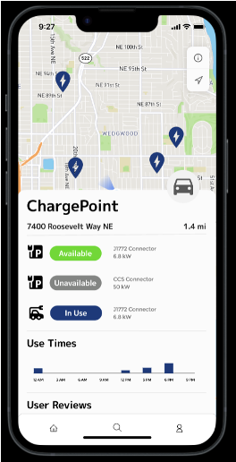
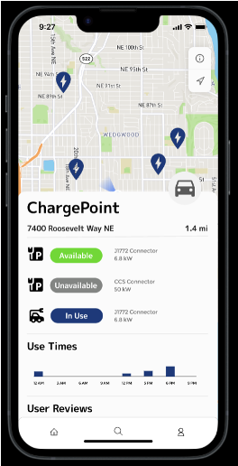

Making Electric Vehicle Charging Fun University of Washington Seattle, WA
Team Leader (Faculty Advisor: Professor David B Laning, Sponsors: Ford & Envorso) Jan. 2023 – June. 2023
- Developed VoltVision iOS app to monitor and analyze real-time data generated by electric vehicle (EV) chargers to assess their health conditions and performance, using Figma for prototype design and coding in Swift.
- Developed two ML models to diagnose EV charger health, achieving 95.5% testing accuracy for 300+ DC data, and to estimate charging time with MSE of 9.802 minutes (DC).
- Developed and deployed a cloud-based charging data computing system using Azure Functions, converting JSON data from iOS app responses into pandas dataframes via HTTP triggers and classifying chargers via ML models.
- Optimized the pipeline by deploying ML models to Azure storage with HTTP-triggered access, achieving processing times of 100-200 milliseconds by testing with charging data sent to an Azure SQL database.
- Designed the user-friendly app with SwiftUI framework to display cloud-based charger health data and live charging updates, integrating Apple Maps for quick routing options, validating the design with 10 Tesla users.

 



Direction of Arrival Estimation with Nonuniform Sparse Arrays The Ohio State University Columbus, OH
Undergraduate Team Leader (Faculty Advisor: Professor Lee C Potter) Jul. 2021 – May 2022
- Designed, constructed, and operated a narrowband sparse sensor array to estimate direction of arrival (DoA).
- Utilized MATLAB programs and MLE estimator to determine DoAs from relative phases of each sensor in the linear and planar sparse array geometries.
- Demonstrated the array placement strategy and DoA estimation techniques presented in Ohio State University (OSU) invention disclosure T2022-060.
Design Challenge
- Instead of plasterboard, which can melt or mold when exposed to water, the design is made of EPS foam, and structural laminates are used for the walls, floors, and roof, making the Casita house stronger and more durable than ordinary buildings
- Sought out the lowest cost prefabricated materials and broke new ground in the structural and technical areas
- Conducted the building process as a Humanitarian Engineering Scholar to help people in need
Advanced Energy Vehicle
- Presented a preliminary case study based on a Model Predictive Control-based strategy that uses a prediction of the future driving pattern and load request in order to minimize fuel use by generating only at the most efficient moments
- Developed Advanced Energy Vehicles (AEVs) and verified the performance of AEVs by structural Analysis Simulation and CFD Flow Simulation, which provided a reference for AEVs structure analysis and optimization


Software Design Project
- Combined problem-solving strategies, design process, and programming skills in a team setting to propose an applied Smart AI technology exercise for both Hangman and Connect Four in Matlab
- Realized the visualization function based on programming and modeling
- Revised with trial and error by execution result by implementing of hand method of both games